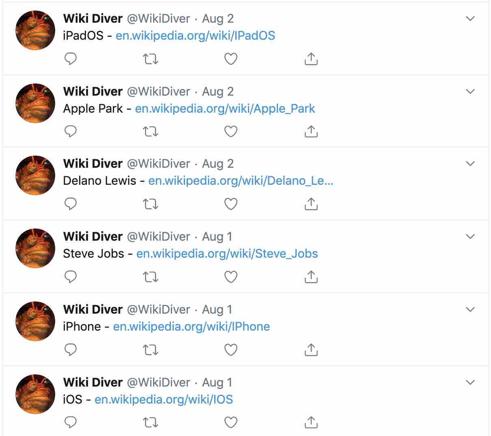

PROJECTS
Organizations
Live Well Community Tool
Web application built with JavaScript, JQuery, Firebase, and Google Charts. Built as a part of Triton Software Engineering for a non-profit to evaluate markets based on a series of questions in order for them to learn how to improve the market.
Web application built with JavaScript, JQuery, Firebase, and Google Charts. Built as a part of Triton Software Engineering for a non-profit to evaluate markets based on a series of questions in order for them to learn how to improve the market.
Gate Detector
Python script written for the Triton Robosub team. Used the OpenCV and NumPy packages to first detect and track color from a webcam, then find the optimal path to move through when presented with a three pronged gate.
Python script written for the Triton Robosub team. Used the OpenCV and NumPy packages to first detect and track color from a webcam, then find the optimal path to move through when presented with a three pronged gate.
Personal
Chess Tournament Manager
Program designed for my high school calculus teacher. Written in Java and using JFrame for the GUI, the program allows for players to be added to a tournament, then pairs them up against each other using the Swiss System. Players are assigned sides and all matches and results are logged.
Beacon
Web application built for SD Hacks 2018. Uses JavaScript, JQuery, Ajax, JSONBin.io, and HERE.com API to display a map full of current events visible to anyone on any browser. Allows for creation of events and immediate addition to the map for all.
Distance Diary
Alexa skill written in Python made for the Tech for Good Hackathon. Uses AWS Lambda, AWS DynamoDB, and the boto3 API for communication with database. Encourages users to ride their bike as opposed to driving by offering incentives in the form of money saved, calories burned, and logs all savings for future reference.
 A* Pathfinding
A* Pathfinding
Visualization of the A* pathfinding algorithm. Written in Python using the tkinter library for the gui. Also implements a game where the user can run from squares that chase them using the algorithm.
CSV to JSON
Python script to take a csv file of student grades and convert them to a JSON instead, improving readability for students as well as helped me learn more about JSON and pandas when I was first introduced to them.
Wiki-Diver
Twitter bot written in Python running on a Raspberry Pi in my room. Started at a random twitter page and scrapes the page it was previously on for links, then picks a new link at random to move to. Moving forwards one link per four hours indefinitely.
This Website
This website was fully made by me! It's got all the things that make a site hip like modal boxes and text that highlights when you hover it. There's even some JavaScript floating around in there! It took all of my effort to not let it end up looking like it was from before I was born.
Program designed for my high school calculus teacher. Written in Java and using JFrame for the GUI, the program allows for players to be added to a tournament, then pairs them up against each other using the Swiss System. Players are assigned sides and all matches and results are logged.
Web application built for SD Hacks 2018. Uses JavaScript, JQuery, Ajax, JSONBin.io, and HERE.com API to display a map full of current events visible to anyone on any browser. Allows for creation of events and immediate addition to the map for all.
Alexa skill written in Python made for the Tech for Good Hackathon. Uses AWS Lambda, AWS DynamoDB, and the boto3 API for communication with database. Encourages users to ride their bike as opposed to driving by offering incentives in the form of money saved, calories burned, and logs all savings for future reference.
Visualization of the A* pathfinding algorithm. Written in Python using the tkinter library for the gui. Also implements a game where the user can run from squares that chase them using the algorithm.
Python script to take a csv file of student grades and convert them to a JSON instead, improving readability for students as well as helped me learn more about JSON and pandas when I was first introduced to them.

Twitter bot written in Python running on a Raspberry Pi in my room. Started at a random twitter page and scrapes the page it was previously on for links, then picks a new link at random to move to. Moving forwards one link per four hours indefinitely.
This website was fully made by me! It's got all the things that make a site hip like modal boxes and text that highlights when you hover it. There's even some JavaScript floating around in there! It took all of my effort to not let it end up looking like it was from before I was born.
Coursework
DSC 30 - Data Structures and Algorithms
Java course that involved implementing data structures like stacks, queues, heaps, hash tables, bloom filters, linked lists, trees, as well as algorithms like Huffman Encoding, A*, BFS, DFS, Djikstra's, Kruskal's, and sorting algorithms.
DSC 80 - The Practice and Application of Data Science
Course that introduced topics like machine learning, pipelines, pandas, and working with spatial, text, and other kinds of data. Worked with tools like pandas, folium, scikit-learn, jupyter notebook, and regex. Also learned about techniques like tf-idf, imputation, and more.
 CSE 12 - Basic Data Structures and Object-Oriented Design
CSE 12 - Basic Data Structures and Object-Oriented Design
Java course working with data structures. Easier version of DSC 30 needed to switch into computer science. Main benefit was the introduction of the C language for the implementation of a stack.
Java course that involved implementing data structures like stacks, queues, heaps, hash tables, bloom filters, linked lists, trees, as well as algorithms like Huffman Encoding, A*, BFS, DFS, Djikstra's, Kruskal's, and sorting algorithms.
Course that introduced topics like machine learning, pipelines, pandas, and working with spatial, text, and other kinds of data. Worked with tools like pandas, folium, scikit-learn, jupyter notebook, and regex. Also learned about techniques like tf-idf, imputation, and more.
Java course working with data structures. Easier version of DSC 30 needed to switch into computer science. Main benefit was the introduction of the C language for the implementation of a stack.
Nothing here :(